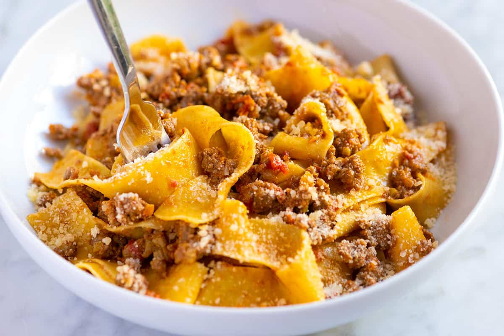

Bolognese
Description
Bolognese is a rich, meat-based sauce originating from Bologna, Italy. It’s a cornerstone of Italian cuisine, known for its deep, savory flavors and hearty texture. Traditionally, it’s made with ground beef or pork, cooked slowly with tomatoes, onions, carrots, celery, garlic, and wine.
The key to a great Bolognese is its long, slow simmering process, which allows the flavors to meld and intensify. It’s often paired with tagliatelle pasta or used as a filling in lasagne. Unlike many tomato-heavy sauces, Bolognese is more meat-forward, with tomatoes playing a supporting role.
Globally, Bolognese has become a versatile favorite, adapted to suit local tastes. Whether served over spaghetti or enjoyed in a baked dish, it remains a comforting, timeless classic.
Ingredients
- Ground beef (or a mix of beef and pork) – 500g
- Pancetta or bacon – 100g, finely chopped
- Onion – 1 medium, finely chopped
- Carrot – 1 medium, finely chopped
- Celery – 1 stalk, finely chopped
- Garlic – 2 cloves, minced
- Tomato paste – 2 tablespoons
- Canned tomatoes – 400g, crushed or chopped
- Red wine – 1 cup (optional, but recommended)
- Beef or chicken stock – 1 cup
- Milk – 1/2 cup (to balance acidity)
- Olive oil – 2 tablespoons
- Bay leaf – 1-2 leaves
- Dried oregano – 1 teaspoon
- Salt and pepper – to taste
- Parmigiano-Reggiano – for serving (optional)
Steps
- Finely chop the onion, carrot, celery, and garlic. Dice the pancetta or bacon into small pieces. Measure out all other ingredients and keep them ready.
- Heat 2 tablespoons of olive oil in a large, heavy-based pot or Dutch oven over medium heat. Add the pancetta and cook until it releases its fat and turns golden, about 3-4 minutes.
- Add the chopped onion, carrot, celery, and garlic to the pot. Sauté for 5-7 minutes, stirring occasionally, until the vegetables soften and become fragrant.
- Increase the heat to medium-high and add the ground beef (or beef and pork mix). Break it up with a wooden spoon and cook until browned, about 8-10 minutes. Ensure the meat is well-cooked and no pink remains.
- Stir in 2 tablespoons of tomato paste and cook for 2-3 minutes to deepen the flavor. Pour in 1 cup of red wine (if using) to deglaze the pot, scraping up any browned bits from the bottom. Let the wine simmer until mostly evaporated.
- Add the 400g of canned tomatoes (crushed or chopped) and 1 cup of beef or chicken stock. Stir well to combine. Drop in 1-2 bay leaves and 1 teaspoon of dried oregano. Season with salt and pepper to taste.
- Reduce the heat to low and let the sauce simmer gently, partially covered, for 1.5 to 2 hours. Stir occasionally to prevent sticking. The sauce should thicken and develop a rich, deep flavor.
- About 15 minutes before the end of cooking, stir in 1/2 cup of milk. This helps balance the acidity and adds a subtle creaminess to the sauce.
- Taste the Bolognese and adjust the salt and pepper if needed. Remove the bay leaves before serving.
- Serve the Bolognese sauce over tagliatelle or your preferred pasta. Garnish with freshly grated Parmigiano-Reggiano and enjoy!